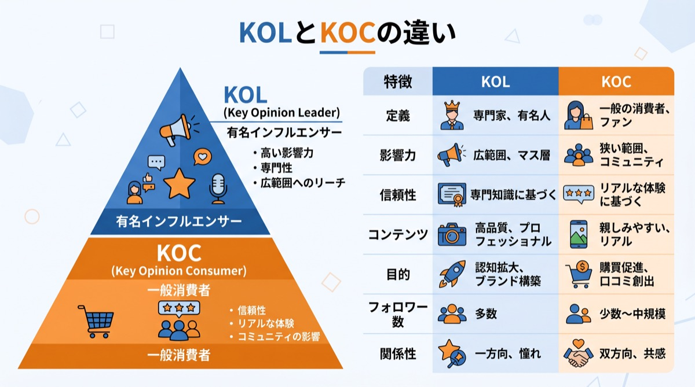

中国や中華圏のマーケティング市場において、最も強力なプロモーション手法として定着しているのが「KOL（Key Opinion Leader）」を活用した施策です。近年では、KOLに加えて「KOC（Key Opinion Consumer）」という言葉も頻繁に耳にするようになりました。
しかし、「そもそもKOLとは何なのか？」「インフルエンサーやKOCと何が違うのか？」「実際に依頼するとどれくらいの費用がかかるのか？」といった疑問を持つ担当者の方も多いのではないでしょうか。本記事では、KOLの基礎知識から最新の費用相場、そして成功に導くためのポイントまで、2026年の最新トレンドに基づき徹底的に解説します。
KOLとは？その意味と中国市場での影響力
KOLの定義（Key Opinion Leader）
KOL（ケーオーエル）とは、「Key Opinion Leader（キー・オピニオン・リーダー）」の頭文字をとった言葉であり、特定の分野やジャンルにおいて高度な専門知識や豊富な経験を持ち、消費者の購買行動に強い影響を与える人物を指します。
美容、ファッション、旅行、家電など、それぞれの専門分野において「この人が言うなら間違いない」と認知されている権威性のあるインフルエンサーがKOLに該当します。
一般的なインフルエンサーとの違い
日本で使われる「インフルエンサー」という言葉は、単にSNSでのフォロワー数が多く、知名度が高い人物全般を指すことが多いです。しかしKOLは、単なる知名度やルックスの良さではなく、「特定の専門領域に対する深い知見」を持っていることが最大の特徴です。そのため、商品のレビューや解説に強い説得力があり、コンバージョン（購買）に直結しやすいという強みがあります。
なぜ中国市場でKOLが絶大な影響力を持つのか？
中国でKOLがこれほどまでに重視される背景には、中国特有の「口コミ文化」と「情報の透明性への課題」があります。中国の消費者は、企業が発信する公式な広告（テレビCMやバナー広告）をあまり信用せず、「身近な友人」や「自分が信頼している専門家（＝KOL）」のリアルな声（口コミ）を何よりも重視します。
そのため、KOLが小紅書（RED）や抖音（TikTok）、WeChat（微信）などのプラットフォームで商品を紹介したり、ライブコマースで販売したりすることで、一夜にして数億円規模の売上が発生することも珍しくありません。

KOLとKOCの決定的な違い
KOLと並んでよく使われるのが「KOC（Key Opinion Consumer）」という言葉です。中国マーケティングを成功させるためには、この両者の違いを正確に理解し、使い分ける必要があります。
KOCとは（Key Opinion Consumer）
KOCは「キー・オピニオン・コンシューマー」の略で、専門家としての立場ではなく、「いち消費者としてのリアルな目線」で商品レビューや情報発信を行う人物のことです。フォロワー数は数千〜数万人規模とKOLには及びませんが、一般消費者に非常に近い存在であるため、親近感や共感を得やすいのが特徴です。
KOLとKOCの3つの違い
- フォロワー数と影響範囲：
KOLは数十万〜数千万人のフォロワーを持ち、圧倒的なリーチ力（拡散力）を誇ります。一方、KOCはフォロワー数が少ないものの、フォロワーとの距離が近く、エンゲージメント率（いいねやコメントの割合）が高い傾向にあります。 - 発信の立ち位置：
KOLは「専門家・インフルエンサー」としてプロフェッショナルな視点で商品を解説します。KOCはあくまで「普通の消費者・友人」としてのリアルな使用感を共有します。 - 消費者からの信頼度：
KOLの投稿は「広告（案件）」として認識されることが増えていますが、その専門性から購買への最後の一押しとなります。KOCの投稿はより「純粋な口コミ」として受け取られやすく、商品の認知形成や共感を生むのに適しています。
KOLとKOCのベストな使い分け戦略
中国マーケティングにおいては、「KOLで一気に認知を広げ、多数のKOCによってリアルな口コミを面で広げる」というハイブリッド戦略が現在の主流です。KOL単体では広告感が強くなりすぎ、KOC単体ではリーチ力が足りないため、両者を組み合わせることで最大のシナジーを生み出します。
KOLマーケティングを導入する3つのメリット
1. 圧倒的な認知拡大と売上への直結
トップクラスのKOLを起用した場合、1回の投稿やライブ配信で数百万人のターゲットユーザーに一瞬で情報を届けることができます。特にライブコマースにおいては、KOLの巧みなトークと限定割引が組み合わさることで、短時間で爆発的な売上（コンバージョン）を獲得することが可能です。
2. ターゲット層への精緻なアプローチが可能
美容系KOLのフォロワーは「美容に関心の高い層」、ガジェット系KOLのフォロワーは「最新家電に関心の高い層」というように、KOLの専門ジャンルに紐づいた属性の濃いフォロワーが集まっています。そのため、自社商品と親和性の高いKOLを選定することで、無駄打ちのない精度の高いターゲティング広告と同等の効果を得ることができます。
3. 商品の信頼性とブランド価値の向上
「あの有名なKOLが愛用している・おすすめしている商品」という事実は、ブランドの権威性を高め、消費者からの信頼度を劇的に向上させます。特に、まだ中国市場での知名度がない日本企業が進出する際、KOLの「お墨付き」を得ることはブランド構築における最短ルートとなります。
KOLマーケティングのデメリットと注意点
1. 起用コスト（費用）が高額になりやすい
市場の成長に伴い、トップKOLの起用費用は年々高騰しています。フォロワー数が数百万規模のKOLに依頼する場合、1回の投稿で数百万円〜一千万円以上の費用がかかるケースも珍しくありません。予算が限られている場合は、ターゲット層に確実に刺さる「ミドルKOL」や「KOC」を複数起用する方が費用対効果（ROI）が高まる場合もあります。
2. KOLの炎上・スキャンダルリスク
KOLが不適切な発言やスキャンダルを起こして炎上した場合、そのKOLがPRしていたブランドにも悪影響（不買運動など）が及ぶリスクがあります。依頼前には、過去の投稿内容やフォロワーの質（フォロワー買いをしていないか等）を厳格に審査する（ブランドセーフティの確認）ことが不可欠です。
3. 商材とKOLのミスマッチによる効果の低迷
フォロワー数だけを見てKOLを選定すると、「投稿はたくさん見られたが、全く売れなかった」という結果に終わることがよくあります。KOLの得意とするジャンル、フォロワーの年齢層・男女比、過去のPR案件の成功実績などを詳細に分析し、自社商材と完全にマッチするKOLを選定する目利き力が求められます。
【2026年最新】KOLの費用相場と依頼手法
KOLの起用にかかる費用は、利用するプラットフォームやKOLのフォロワー数（ランク）によって大きく異なります。ここでは2026年現在の一般的な費用相場の目安をご紹介します。
プラットフォーム別の特徴と相場感
- 小紅書（RED）：
美容、ファッション、旅行など女性向け商材に最適。画像＋テキストでのレビューが中心。フォロワー単価の目安は1フォロワーあたり約10円〜20円。 - 抖音（TikTok）：
圧倒的な拡散力を持ち、動画による直感的な訴求やライブコマースに最適。エンタメ要素が強め。フォロワー単価の目安は1フォロワーあたり約5円〜15円。 - WeChat（微信）：
公式アカウントのフォロワーという「すでに囲い込まれた濃いファン」に対する長文記事での深い訴求が可能。コンバージョン率が非常に高いのが特徴。
ランク別（フォロワー数別）の費用目安
一般的に、KOLはフォロワー数によって以下のように分類され、費用が変動します。
※あくまで目安であり、KOLのエンゲージメント率や専門性によって大きく上下します。
- トップKOL（フォロワー数100万人〜）： 1投稿あたり200万円〜数千万円（＋売上に応じたコミッション制の場合もあり）
- ミドルKOL（フォロワー数10万人〜100万人）： 1投稿あたり30万円〜150万円
- マイクロKOL（フォロワー数1万人〜10万人）： 1投稿あたり5万円〜20万円
- KOC（フォロワー数数千人〜1万人）： 1投稿あたり1万円〜数万円、または商品提供（ギフティング）のみ
依頼手法：直接依頼か、MCN（事務所）経由か
KOLに依頼する方法としては、SNSのダイレクトメッセージを通じて直接交渉する方法と、「MCN（Multi-Channel Network）」と呼ばれるインフルエンサーのマネジメント事務所や、広告代理店を経由する方法があります。中国の商慣習に不慣れな日本企業の場合は、契約トラブル（投稿されない、内容が違うなど）を防ぐためにも、実績のある専門の代理店を介して依頼することを強く推奨します。
まとめ：KOLとKOCを組み合わせた最適な中国マーケティングを
中国市場においてKOLの活用はもはや選択肢ではなく、成功のための「必須条件」となっています。しかし、高額な費用を払って有名なKOLに依頼すれば必ず売れるという時代は終わり、現在は「自社商品に最適なKOLの選定」と「KOCを活用したリアルな口コミの土台作り」という緻密な戦略が求められています。
PROTECHでは、中国市場における豊富なデータ分析と独自ネットワークを活かし、小紅書（RED）や抖音（TikTok）での最適なKOL/KOCキャスティングから、動画制作、運用代行までをワンストップでご支援しております。「どのKOLを選べばいいかわからない」「費用対効果の高い施策を実施したい」という企業様は、ぜひお気軽にご相談ください。
PROTECHでは、飲食店の魅力を最大限に引き出すインバウンド動画制作から、抖音・TikTokの運営代行、インフルエンサー（KOL）のキャスティングまでを一貫してサポートしています。集客力アップを目指す飲食店様は、ぜひご相談ください。